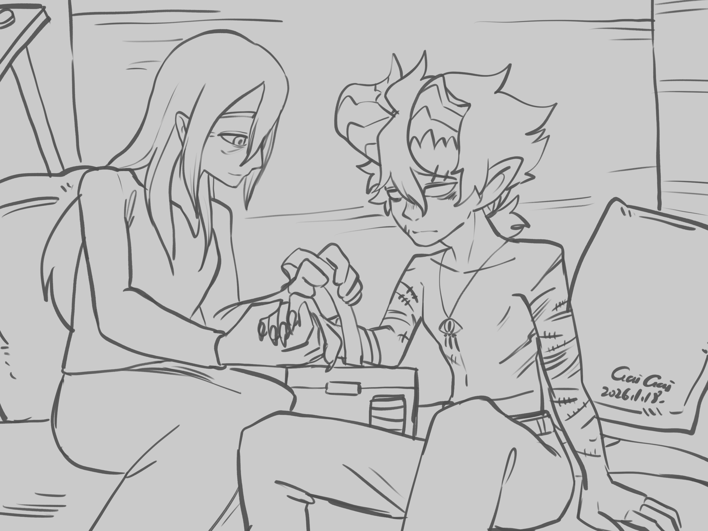

Chapter 1: Do Not Leave Us in the Dark
Py'Par's Vision

Py'Par's Vision
15051.10.18
忍著飢餓，Buzz扛起虛弱的Lott，跟著Ubbo朝著芒果留下的痕跡，持續往前追尋Psyber。再怎麼樣，都不能再失去夥伴了。Lott心想。樹林逐漸密集，但巨蛇留下的爬痕還依稀可見。Lott手中緊握著Psyber留下的Nessis聖徽。雖然他不是Nessis的信徒，但在這麼茂盛的樹林中，樹林之神Nessis肯定是無比強大的吧。
隨著深入樹林，Ubbo發現巨蛇的爬痕越來越稀疏。他停了一下，依照自己對樹林的了解以及直覺，調整了路線。背著Lott的Buzz沒有多說話，只是拿起背在身上的酒壺喝了一口。背上的Lott聞到酒味，想起了一名故人。一樣是妖精，一樣喝著酒，一樣是在樹林中，他們從生人成為夥伴。除了芒果外，Phola是那場悲劇唯一和Lott逃過一劫的人。但在那之後，Lott也不知道Phola過得如何？會不會有和他一樣沉重的罪孽，背負在身上呢......
樹林內寂靜的不像話，只有穿梭在樹林間樹葉的沙沙聲，以及他們踏在地上的腳步聲。萬籟俱寂。冒險者們有了共識，在日落前一定要想辦法踏出這片樹林。日落後太危險了。Ubbo朝著他認為通往樹林邊緣的方向繼續行走。
終於，冒險者們看見了樹林的邊界。一名人形生物正自在地走出樹林。Ubbo大聲叫著，Buzz則加快步速，趕緊跟上。但在看見那人與自己幾分相似的特徵後，Buzz頓了一下。不是妖精，就是半妖精吧？但看那人穿著樸素，沒有特定的宗教標誌、貴族或王室的衣著，他也就放下戒心了。
陌生人在了解冒險者們的需求後，提議可以到他們的村莊過夜休息。眼看Lott筋疲力竭，冒險者們也沒多想，便跟上了。樹林的邊緣，村莊坐落在一處平整得離奇的區域。高高的木頭架起的大門只有門框，誰都能進來。村莊很小，放眼望去只有五、六間房子，和一座坐落在村莊中間的大營火，人數不超過20人。「歡迎你們！」帶著他們到來的陌生人微笑著說道。
三名孩子從村內跑了出來，積極的要幫助冒險者們。Buzz眼看這裡安全了，便把Lott從背上放了下來。村民們提供冒險者們客房居住，也表示如果他們不介意，也可以住在其他居民的家中。「別在夜晚離開這裡喔！」他們反覆說著這句話。
Buzz請一名外觀年齡十出頭歲的小女孩幫他裝了水袋，名為Tara的女孩開心的帶著水袋跑了。年紀小了點的Tara的弟弟Nim，和另一名更年幼的小男孩，Sael則護送著冒險者們來到客房。邀請他們晚點一起來營火邊吃晚餐後，兩名小男孩就手牽手跑了出去。
簡單的客房內有適合兩人居住的床鋪和桌子，Lott倒頭就睡。他已經很久沒有這麼舒服的休息了，這裡的床鋪甚至遠勝過不少其他城鎮的旅店。Buzz和Ubbo也各自找了角落簡單休息。一段時間後，Buzz注意到有個人影在窗邊，像是在窺探他們。那人像是年幼的Sael。但當Buzz開門要去找他時，Sael卻趕緊跑走了。Buzz猜測是晚餐時間到了，便帶著Ubbo和休息足夠的Lott一同前往營火旁。
待大家坐好後，一名中年女子站了起來，用洪亮的聲音，邀請Buzz、Ubbo和Lott來到這裡，成爲這裡的一家人。他也要大家好好享用今天的晚餐。「別在夜晚離開這裡。」他以這句話做總結，其他村民們也附和著：「別在夜晚離開這裡。」接著，隨著天色變暗，熱鬧的晚餐時間便開始了。
鐵盤上裝滿肉類的串燒，繞著營火傳遞，冒險者們大快朵頤，彷彿這裡的肉永遠吃不完一樣。孩子們不久後便開心的玩了起來，繞著營火，隨機點人「當鬼」。被點到的Buzz對著個民間的小遊戲也有所認識，站了起來，繞了幾圈，又點了其他小朋友的肩膀。不久後，大家的座位都換了，冒險者們也一一找到了不同的聊天對象。
Buzz嘗試詢問關於這裡的故事，當然包含了「為何不能在黑夜離開這裡」這件事。村民們說這是老祖宗留下的智慧，但對於到底為什麼會這樣說，也不清楚原因，只是被當成村規一樣牢牢記住而已。
Ubbo試著和孩子們傳教。這裡似乎對Nessis稍有了解，但稱不上Nessis的信仰者。而對於Phyneal，還子們當然是完全不清楚。但對於宗教，孩子們聽了興致缺缺，直到Ubbo開始變形成他們身邊人的模樣，他們才開始興高采烈起來。
Lott和一名村民太太聊了起來，長久冒險下來突然可以如此開心、放鬆，這種情緒，反而讓他情緒潰堤，淚止不住地流了下來。太太把Lott擁入懷中。
「我們不是還在追著失蹤的Psyber？現在這樣幸福的吃著烤肉串、和孩子們玩耍、談著自己過去冒險的故事，是可以的嗎......」
Lott藉著Ubbo的烏鴉飛到他頭頂時，站起了身，追著烏鴉跑。然後趁著沒人注意時，繞到了客房不遠處旁的一間破舊屋子，躲了起來。破舊的門推開，那試衣間放滿農具的倉庫。他反手將門關了起來，倚著木門坐了下來。潸然淚下。一段時間後，敲門聲響起。太太的聲音溫柔地傳了進來。Lott開了門讓他加入自己，他也在太太的懷中再次痛哭。太太看了看Lott身上的傷口，承諾要帶工具回來幫Lott包紮。
另一方面，Buzz從背包掏出了一疊卡牌，吸引了一名年輕人的注意。他一步步教了年輕人怎麼玩牌。年輕人雖然資質不錯，但還是輸給熟練的Buzz。此時，一名年長的太太詢問Buzz有沒有需要他們幫忙洗的衣服或盔甲？Buzz便領著老太太先回客房去了。年輕人吆喝著說等Buzz回來，他就準備好要贏他了。客房內，Buzz在老太太的提醒下，才知道房內原來要脫鞋。他將自己的一件衣物和盔甲遞給了太太，但表示不方便動夥伴們的行囊。接著Buzz便敞開客房的門，休息之餘也可以看看其他人在忙些什麼事。
Lott聽見說好的三聲敲門聲，太太帶著一盒裝滿急救工具的盒子、一顆枕頭和一件衣服走了進來。他小心翼翼地替Lott擦藥與包紮，只著枕頭說著如果Lott想在這裡過夜也可以，然後讓Lott把衣服換了下來，先穿他帶來的衣服。太太離開不久後，Lott也再次走出倉庫外。
看見Lott，Ubbo變身成了眼魔的形象，對此有所感冒的Lott飛速地向他丟了兩把匕首洩恨。孩子們看了也覺得刺激有趣。Sael將匕首撿了起來，屁顛屁顛的跑了回來，把匕首還給Lott。Lott拿起兩把匕首開始雜耍，表演得小朋友們很開心。
時間晚了，大人們催促著孩子們回家準備休息。Ubbo和Lott嘗試走到村門口，但馬上被一隻小手按著肩膀。Nim說著「別在夜晚離開這裡」。Ubbo站在門口，嘗試感知這裡，卻沒有發現任何魔法或神的影響。Nim的母親很快地趕了過來，同時也趕緊讓Ubbo和Lott往村莊內走。
回客房的路上，Lott再次見到了太太。知道Lott今晚情緒十分澎湃，太太邀請他今晚到他們家過夜，可以好好聊聊。Lott接受了邀請，便和太太前往他的家裡去。Ubbo則回到客房去。
關起門，Ubbo和Buzz表示自己對於這地方感到的不解。偌大的森林雖然是一片死寂，但肯定還是有危險。這種沒有任何防護措施的村莊好像在這裡好久、好久了，讓他感到古怪。而當然，還有那句老祖宗留下來的「別在夜晚離開這裡」，像咒語一般，不斷被覆誦著。Buzz則有不同想法。他認為這裡的人們有辦法取得足夠的肉品來做串燒，肯定是有足夠的自保能力。但當然，這不表示他對這個地方毫無疑惑。兩人決定好，今晚睡足後，在日出大家活動前，要到村莊邊緣探索一下。
太太的家裡，Lott用了浴室，終於將自己一身的疲憊洗淨。太太邀請他在客廳坐著聊天。他遞給Lott一杯甜甜的酒，十分好喝。Lott感謝太太的盛情款待，但同時他也很想知道關於這個村莊的歷史。然而，在喝下第二杯酒後，太太說起故事時，Lott的意識卻開始渙散，睡著了。
15051.10.19
床上，冥想中的Buzz聽見了門被小聲地打開。他睜開眼，矮小的身影映入眼簾，是Sael。Buzz問他怎麼了，Sael慌張的說自己只是要進來看看大家睡著了沒有。Buzz注意到Sael離開前瞥了一眼鞋櫃。
待Ubbo睡飽後，兩人悄悄離開了客房，向客房旁的樹林邊緣探索。「你們在做什麼？」童稚的聲音從背後竄了出來，Nim站在他們身後。「不可以到森林裡面去，很危險。」Buzz嘗試和他說李，但顯然沒那麼容易。Ubbo化身成大氣元素，朝著後方的樹林飛起，卻沒看見任何生機。Nim嚷嚷著說Ubbo作弊，Buzz則說Ubbo有遵守約定，沒有「踏出」村莊外，Nim則說他要去找他媽媽來。Ubbo繞了一圈回來後，載著Buzz也繞了一圈，卻一樣什麼也沒看見。回來時，Nim的媽媽出現在他身旁。他沒有生氣，眼中僅是擔憂，抱著Buzz說著「沒事就好」。
「別在夜晚離開這裡。」他說。